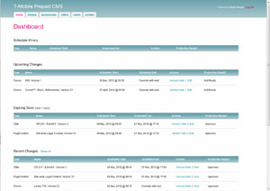
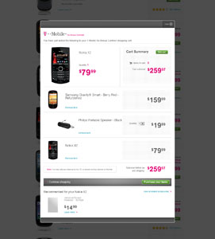
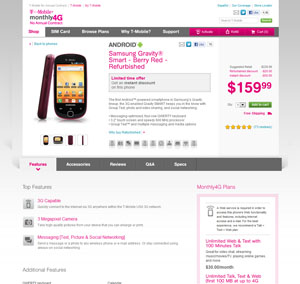
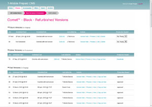
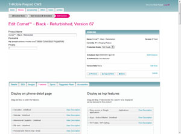
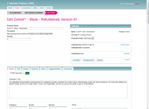

- 
- 
- 
- 
- 
- 
I led the development and architecture of T-Mobile's prepaid phone website, prepaid-phones.t-mobile.com. In addition to the consumer-facing website, we also developed a custom CMS backend to manage content, phones, accessories, and offers, which synchronized various feeds from T-Mobile's services.
Highlights
- Time travel! We designed and implemented the ultimate CMS. It not only allowed scheduling of future changes to phones, accessories, or offers, it allowed admins to travel to any point in time of the fully functional site. Want to see how the site was 3 months ago? How it'll look like in 2 weeks with all the pending changes? Done. Easy and fast.
- Always up-to-date. Integrated and synchronized with multiple T-Mobile feeds. Before this system, sites updated from the feeds once daily -- we were able to synchronize every 5 minutes.
- Fast. Scaled. Intelligent output caching, and caching throughout the content management system meant we can serve over 1,000 connections per box without breaking a sweat.
Technologies Used
- C# with ASP.NET 3.5, ASP.NET MVC 3 (utilizing Razor View Engine), and NHibernate
- jQuery, Backbone, and Underscore.js on the frontend
- Clustered Microsoft SQL Servers
- Continuous integration with SVN and CruiseControl.NET
- Load-balanced IIS 7 servers